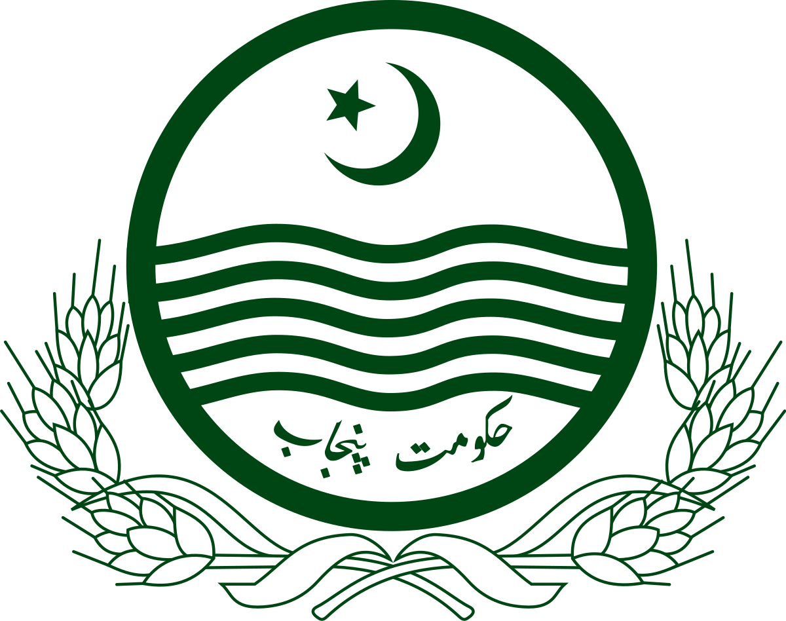
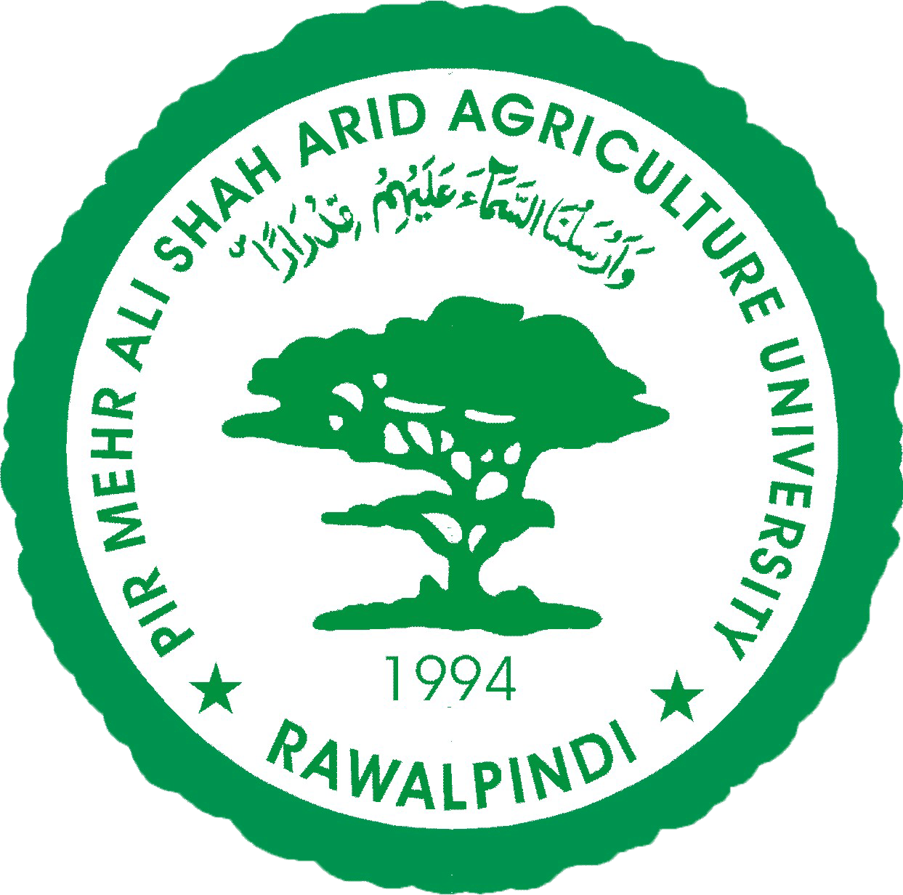
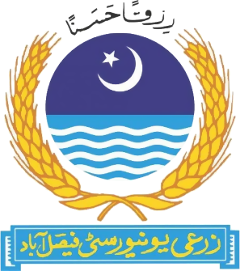
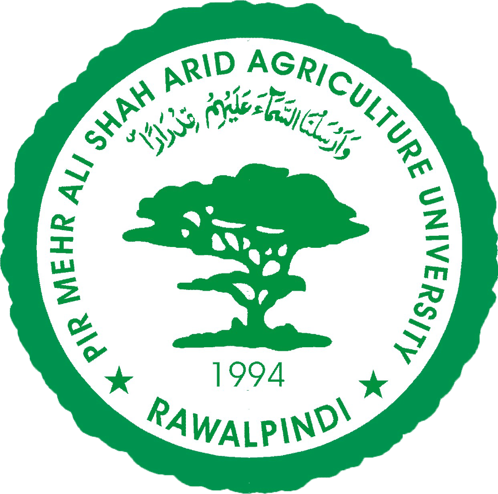
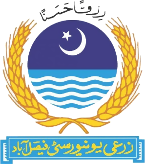
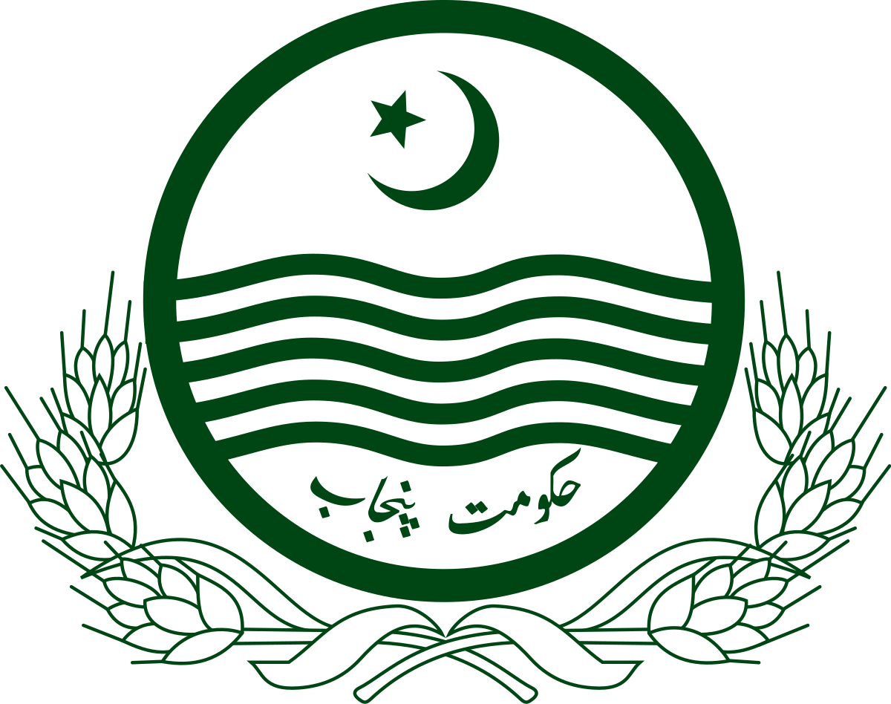
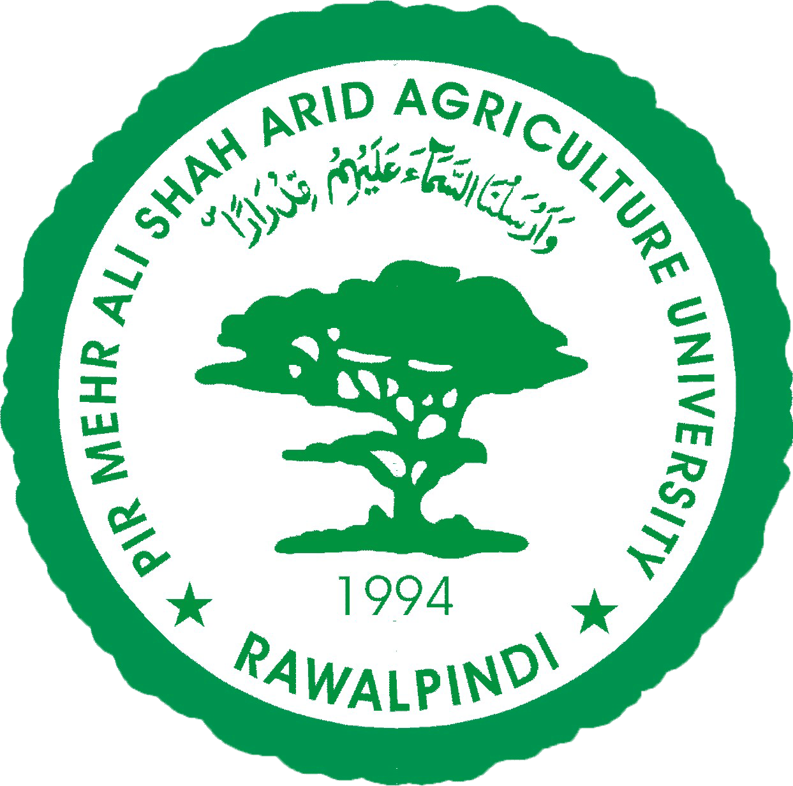
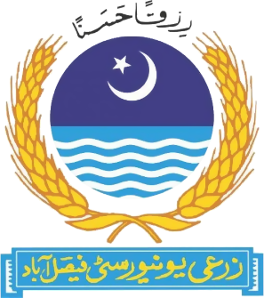
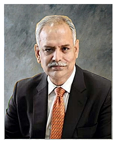

 



|
| HOME | ADMISSION | ACADEMICS | STUDENTS | RESEARCHE | OFFICES |
Enhancing productivity in 10 Low
Producing Tehsil through Deploment
Of Fresh Agri.Scientists at Farm Level
|



|
|  |
Dear Viewers, I warmly welcome you to MNS University of Agriculture, Multan's website. This is an exciting place to be part of our growing success story. Please browse through the website to see our diverse academic offerings, strengths and advantages, and be familiarized with the zeal and dynamism of the campus community that fills us with optimism of our collective future. We are committed to provide a learning ecology ensuring experiential learning of the graduates with appropriate skills and internships for future farming, entrepreneurship, and increased employability of the students. We have set our directions right, not only in terms of designing our programs but also in developing our infrastructure to provide the students with best possible facilities in terms of research, education, outreach, and community services. The university, in a very short period, has come a long way from its humble beginning to its current state as an expanded campus with fully operational Academic Block, Teaching Labs, Research Farms, and well-equipped Graduate Labs Block, hostel and sports facilities. Acknowledging the efforts for developing a Sustainable Campus, the UI GreenMetric World University Rankings has ranked MNSUAM at number 1 among the universities across Pakistan. I am proud to proclaim that our experienced and highly qualified faculty, vigilant and profound administration, our well-established ORIC, QEC and Financial Aid offices are always there to facilitate the students. During their stay at the campus, students are groomed to maintain a healthy balance between their curricular, co-curricular, and extra-curricular activities to nurture their personality. Our Career Development Center ensures that students are provided with career guidance and resources to help them identify and work towards their career and personal goals. The center eagerly helps students with their career |
Dr.Abdul Razzaq
Associate Professor
Dr.Muhammad
Umar Chaudhry
Assistant Professor

Israr Hussain
Lecturer
|
Copyright © 2022 MNS-University of Agriculture, Multan.. All Rights Reserved.. |
| ABOURT MNSUAM | CONNECT WITH US | QUICK LINKS | MORE QUICK LINKS | |
|---|---|---|---|---|
| Home | HEC-Pakistan | Mango Short Tree System | ||
| News | Agriculture Punjab | Office of Research | ||
| About Multan | Press Release Archives | NCEA Council | Quality Enhancement Cell | |
| Vision & Mission | NAEA Council | DICE-AFS | ||
| Contact Us | CAS-SP | ICDD | ||
| Political Map Of Pakistan |